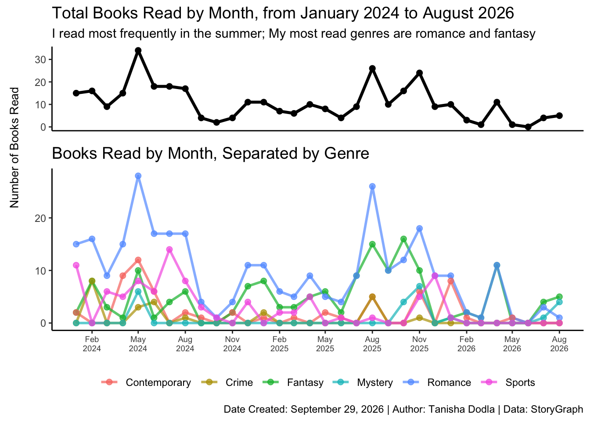
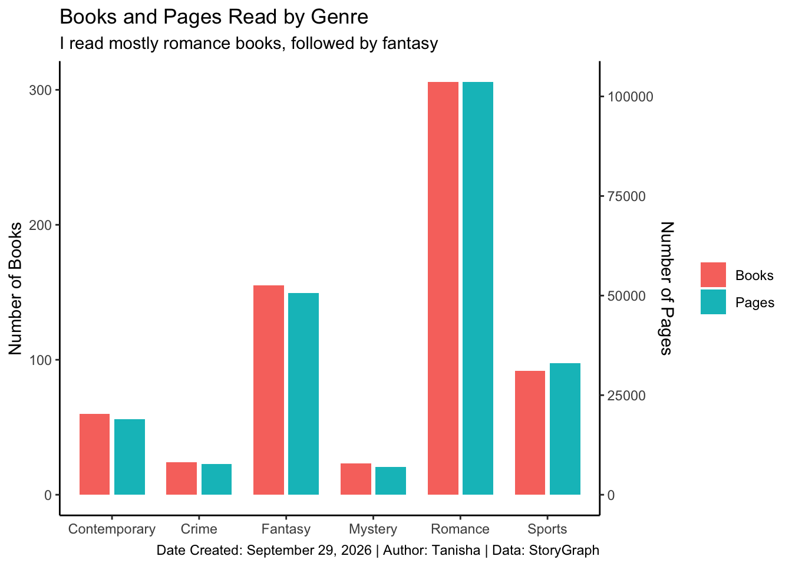

2024-2026: How much have I read?
I love to read - I started getting into reading in the fourth grade, and ever since then, I average over 100 books a year. I know briefly that my most read genres are fantasy and romance, but I am curious to see whether those trends hold up when I actually analyze them. I logged all the books I read, and when I read them, from 2024 onwards on a platform called StoryGraph. I exported this data, added some more columns that I felt were important, to get a dataset for me to work with.
Initial Wrangling Code
#Remove unnecessary columns
books = books%>%
select(-`Date Added`, -`ISBN/UID`, -`Read Count`)
#Rename the columns
books = books%>%
rename(genre_1 = `Genre 1`, genre_2 = `Genre 2`, pages = `Page Count`, status = `Read Status`, last_date = `Last Date Read`, date_range = `Dates Read`, authors=Authors, title=Title, series = Series)
#Remove whitespace around all the values in all the columns
books = books %>%
mutate(across(where(is.character), str_trim))
#Keep only books that I read
books = books %>%
filter(status == "read")
#Change last date to be a date variable
books = books%>%
mutate(last_date = as.Date(last_date))
#Remove books read before 2024 (the records are not complete before that)
books = books %>%
filter(year(last_date) >= 2024)Books Read Over Time
I am first interested in seeing how many books I have read over time, which I can also disaggregate by genre. I seem to read a lot during the summer and in the winter, which makes sense, because I am not at college during those times. I also seem to read a lot of romance and fantasy books. I used the read a lot more sports books, but that has decreased a lot, to no sports books in the last few months.
Data Wrangling Code
genres = c("Fantasy", "Romance", "Contemporary",
"Crime", "Mystery", "Sports")
# Create a sequence of every month in the period
all_months = tibble(
month = seq(from = as.Date("2024-01-01"), to = as.Date("2026-08-01"), by = "month"))
# Create monthly book counts
monthly_books = books %>%
mutate(month = floor_date(last_date, unit = "month"),
genre_1 = str_to_lower(genre_1),
genre_2 = str_to_lower(genre_2)) %>%
filter(month >= as.Date("2024-01-01"),
month <= as.Date("2026-08-01")) %>%
group_by(month) %>%
summarise(total = n(),
Fantasy = sum(genre_1 == "fantasy" | genre_2 == "fantasy", na.rm = TRUE),
Romance = sum(genre_1 == "romance" | genre_2 == "romance", na.rm = TRUE),
Contemporary = sum(genre_1 == "contemporary" | genre_2 == "contemporary", na.rm = TRUE),
Crime = sum(genre_1 == "crime" | genre_2 == "crime", na.rm = TRUE),
Mystery = sum(genre_1 == "mystery" | genre_2 == "mystery", na.rm = TRUE),
Sports = sum(genre_1 == "sports" | genre_2 == "sports", na.rm = TRUE),
.groups = "drop") %>%
right_join(all_months, by = "month") %>%
mutate(across(-month, ~ replace_na(.x, 0))) %>%
arrange(month)
monthly_books_long = monthly_books %>%
pivot_longer(cols = c(Fantasy, Romance, Contemporary, Crime, Mystery, Sports),
names_to = "genre",
values_to = "books")
monthly_books_long = monthly_books_long%>%
select(-total)Graphing Code
#Total Plot
total_plot = ggplot(monthly_books, aes(x = month, y = total)) +
geom_line(linewidth = 1.2) +
geom_point(size = 2) +
scale_x_date(date_breaks = "3 months",date_labels = "%b\n%Y") +
labs(title = "Total Books Read by Month, from January 2024 to August 2026", subtitle = "I read most frequently in the summer; My most read genres are romance and fantasy", x = NULL, y = NULL) +
theme_classic() +
theme(axis.text.x = element_blank(),axis.ticks.x = element_blank(), plot.title = element_text(size = 14))
#By genre Plot
genre_plot = ggplot(monthly_books_long, aes(x = month, y = books, color = genre)) +
geom_line(linewidth = 1, alpha = 0.7) +
geom_point(size = 2, alpha = 0.7) +
scale_x_date(date_breaks = "3 months",date_labels = "%b\n%Y") +
labs(title = "Books Read by Month, Separated by Genre", caption = "Date Created: September 29, 2026 | Author: Tanisha Dodla | Data: StoryGraph", y = NULL, color = NULL, x= NULL) +
theme_classic() +
theme(axis.text.x = element_text(angle = 0, hjust = 0.5,size = 7),
legend.position = "bottom",
legend.title = element_blank(),
legend.direction = "horizontal", plot.title = element_text(size = 14))+
guides(color = guide_legend(nrow = 1))
#Combine plots
combined_plot = plot_grid(
total_plot,
genre_plot,
ncol = 1,
align = "v",
axis = "lr",
rel_heights = c(1, 2))
final_plot <- plot_grid(
ggdraw() +
draw_label(
"Number of Books Read",
angle = 90,
x = 0.5,
y = 0.65, size = 10),
combined_plot,
ncol = 2,
rel_widths = c(0.05, 1))
final_plot
Genres by pages
I read mostly romance books, followed by fantasy.
Genre Bar Plot Code
#Number of books by genre
genre_bar = books %>%
summarise(
Fantasy = sum(genre_1 == "Fantasy" | genre_2 == "Fantasy", na.rm = TRUE),
Romance = sum(genre_1 == "Romance" | genre_2 == "Romance", na.rm = TRUE),
Contemporary = sum(genre_1 == "Contemporary" | genre_2 == "Contemporary", na.rm = TRUE),
Crime = sum(genre_1 == "Crime" | genre_2 == "Crime", na.rm = TRUE),
Mystery = sum(genre_1 == "Mystery" | genre_2 == "Mystery", na.rm = TRUE),
Sports = sum(genre_1 == "Sports" | genre_2 == "Sports", na.rm = TRUE))%>%
pivot_longer(cols = everything(), names_to = "genre", values_to = "books")
#Number of pages by genre
genre_pages = books %>%
summarise(Fantasy = sum(pages[genre_1 == "Fantasy" | genre_2 == "Fantasy"], na.rm = TRUE),
Romance = sum(pages[genre_1 == "Romance" | genre_2 == "Romance"], na.rm = TRUE),
Contemporary = sum(pages[genre_1 == "Contemporary" | genre_2 == "Contemporary"], na.rm = TRUE),
Crime = sum(pages[genre_1 == "Crime" | genre_2 == "Crime"], na.rm = TRUE),
Mystery = sum(pages[genre_1 == "Mystery" | genre_2 == "Mystery"], na.rm = TRUE),
Sports = sum(pages[genre_1 == "Sports" | genre_2 == "Sports"], na.rm = TRUE)) %>%
pivot_longer(cols = everything(), names_to = "genre", values_to = "pages")
#merge on genre
genre_data = genre_bar %>%
left_join(genre_pages, by = "genre")
genre_bar_long = genre_data %>%
select(genre, books, pages) %>%
pivot_longer(cols = c(books, pages), names_to = "measure", values_to = "value")
# Find a scaling factor between pages and books
scale_factor <- max(genre_data$pages) / max(genre_data$books)
ggplot(genre_data, aes(x = genre)) +
# Books
geom_col(
aes(y = books, fill = "Books"),
position = position_nudge(x = -0.2),
width = 0.35
) +
# Pages, scaled to book axis
geom_col(
aes(y = pages / scale_factor, fill = "Pages"),
position = position_nudge(x = 0.2),
width = 0.35
) +
scale_y_continuous(
name = "Number of Books",
sec.axis = sec_axis(
~ . * scale_factor,
name = "Number of Pages"
)
) +
labs(
title = "Books and Pages Read by Genre", subtitle = "I read mostly romance books, followed by fantasy", caption = "Date Created: September 29, 2026 | Author: Tanisha | Data: StoryGraph",
x = NULL,
fill = NULL
) +
theme_classic()